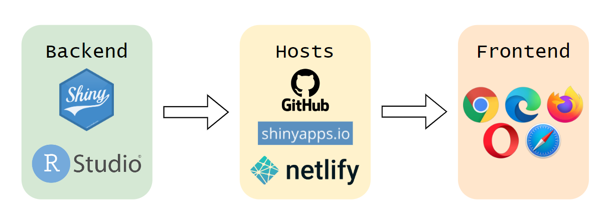

Overview
1 Theme
We would like to explore 2 themes:
- Spatial Point Patterns Analysis
- Geographical Accessibility
2 Abstract
Spatial point patterns analysis studies the distribution of the points, whether the distribution is random or clustered. This form of analysis can be very useful in the evaluation of events such as crime, traffic accidents, diseases, etc. Thus, we would be able to plan after the analysis and investigate whether there are any dependency relationships between different point distributions to make a comparison and conclusion.
Analysis on geographical accessibility can allow us to model existing data to figure how accessible places are in comparison with one another. This helps us in discovering areas that are less accessible and allows us to be able to prioritise improving the geographical accessibility for those areas. A relevant topic would be the analysis on geographical accessibility to health facilities which can be crucial especially when the situation is life threatening.
3 Problem & Motivation
Geographical data is abundant online for users to use freely. However, many do not know what tool to use or know how to make use of those data since they are in different file formats like geojson, csv, shapefile and more.
The aim of our project is to create a Shiny web application that will enable users to upload their data and help them with the geographical analysis, in particular spatial point patterns analysis and analysis on geographical accessibility. As such, one does not need to be technically trained to do these types of analysis.
4 Project Objectives
In this project, we would like our Shiny web application to help users:
- visualise distributions and realise the benefits of spatial point patterns analysis
- conduct spatial point patterns analysis (Kernel density estimation and G/F/K/L functions)
- model geographical accessibility (Hansen/KD2SFCA/SAM methods)
- use all the insights gathered from the analysis and models to make practical decisions
5 Main Features
The main features for the analytical tools are:
- Spatial Point Patterns Analysis
- Filters
- Different variables for analysis
- Various bandwidth selection methods (diggle, CvL, scott, ppl)
- Various Kernel Methods (gaussian, epanechnikov, quartic, disc)
- Various Statistical Functions (G/F/K/L functions)
- Sliders
- For fixed bandwidth selection method
- Number of simulations
- Filters
- Geographical Accessibility
- Filters
- Various modelling and visualising methods (Hansen/KD2SFCA/SAM)
- Sliders
- Number of classes
- Filters
6 Data Sources
Spatial Point Patterns Analysis
Geographical Accessibility
7 Approach / Methodology
- Data Preparation
- Gather data from various sources
- Import geospatial and aspatial data
- Data wrangling
- Exploratory Data Analysis
- Visualisation of the data
- Checking for outliers, anomalies, missing values, noise
- Further data wrangling (if necessary)
- Spatial Point Patterns Analysis
- First-order analysis
- Kernel Density Estimation
- Second-order analysis
- G Function
- F Function
- K Function
- L Function
- First-order analysis
- Geographical Accessibility
- Hansen Method
- KD2SFCA Method
- SAM Method
8 Literature Review
Improving geographical accessibility modelling for operational use by local health actors - A case study
- Summary
- The study developed precise, context-specific estimates of geographical accessibility to care in a rural district of Madagascar to help with the design and implementation of interventions that improve access for remote populations
- Learning Points
- Data collection method - estimated shortest routes from every household in the district to the nearest primary health care centre and community health site with the Open Source Routing Machine (OSRM) tool
- Linking back to our project
- Data collection method - try an OSRM tool or scripting to get distance
Spatiotemporal characteristics and driving forces of terrorist attacks in Belt and Road regions
- Summary
- The study used the terrorism-related spatial points to analyse the driving forces behind terrorist attacks in BRI countries. Crucial information like the days of the week with the most number of terrorist attacks are included. The most frequent types of terrorist attacks could be inferred too.
- This study used spatiotemporal characteristics to understand the distribution of terrorist attacks and the types. Additionally, Fragile States Index was used for a driving-force analysis (GeoDetecter was also used to explore the drivers of terrorist attacks). The terrorist attacks were divided into different time frames for analysis too.
- Learning Points
- The use of spatiotemporal analysis + Fragile States Index to determine the driving force behind the attacks. Conclusions derived from the paper are: “security apparatus”, “human flight and brain drain” → make use of geographical data + Fragile States Index to gain a more abstract like insight on world events
- Linking back to the project
- We allow the user to select the country of their choice and see the terrorism spread, types of terrorism that are prominent, indicate the driving forces for such terrorism and suggest ways to protect themselves
9 Storyboard
10 Application Architecture
